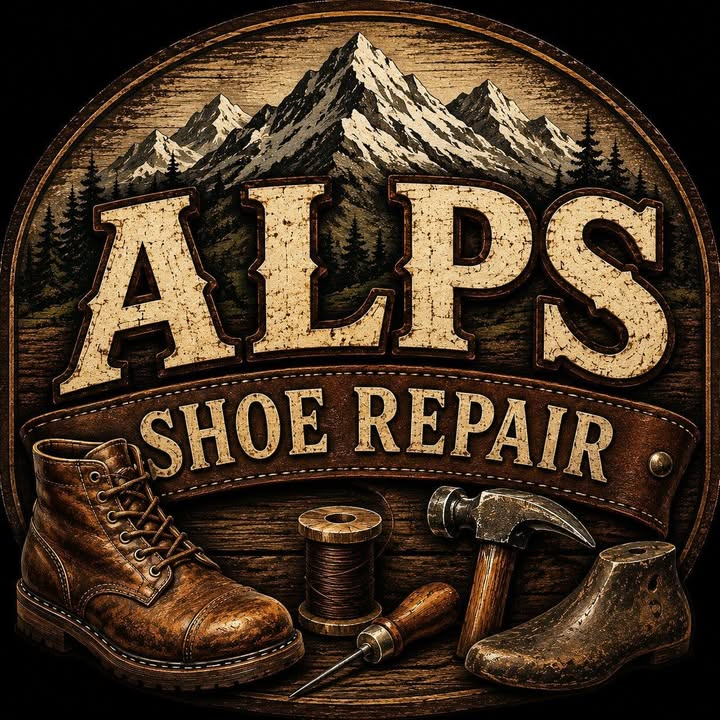

Shoe & boot repair
Heels, soles and stitching, including resoling high-end shoes.
Ask about shoe & boot repair →
Alps Shoe RepairA locally owned Baxter Street cobbler for boots, high-end shoes and leather goods, with fast work at fair prices.
Heels, soles and stitching, including resoling high-end shoes.
Ask about shoe & boot repair →Color work for work boots and leather.
Ask about dyeing & refinishing →Bag repairs and zipper replacements that match the original.
Ask about purses & zippers →Brought boots in to have a heel fixed and got back what felt like a new pair.
Incredibly friendly and very skilled, with wildly low prices.
1077 Baxter St, Ste I, Athens, GA 30606
Call nowGet directionsEmail alpsshoerepair@gmail.comFacebook page| Mon–Fri | 6 AM–4 PM |
|---|---|
| Sat–Sun | Closed |